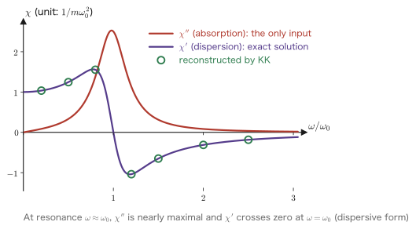

Chapter 4Causality and the Kramers–Kronig Relations
This chapter deals with the most beautiful result in linear response theory. Our starting point is a single line that looks almost trivial, the one we listed as the third postulate in Chapter 1.
$$ \chi(t) = 0 \qquad (t<0) $$“The result never occurs before the cause.” That is all. Yet merely by accepting this one line, the real part $\chi'(\omega)$ and the imaginary part $\chi''(\omega)$ of the response function completely determine each other. If we know one of them over all frequencies, the other follows by carrying out a single integral. These are the Kramers–Kronig relations (KK relations).
Let us first say what this claim means for experimentalists. As we saw in Chapter 3, what an experiment measures directly is, in most cases, $\chi''$ (absorption). We shine light and measure how much is absorbed. We shine an electron beam and measure how much energy is lost. By contrast, it is difficult to measure $\chi'$ (dispersion, refraction) directly. With the KK relations, however, merely by measuring the absorption spectrum we can compute the refractive index. In fact, much of the data on the optical constants of solids has been produced by this procedure. Causality, a “mere piece of logic,” underpins practical data analysis.
The technical crux of this chapter is the fact that “$\chi(\omega)$ is analytic in the upper half-plane of the complex $\omega$ plane,” together with how to use it (Cauchy's integral formula). However, complex analysis itself is treated in a self-contained way in Chapter 5. In this chapter we collect the facts we need in boxes, state them explicitly, and move on after noting, “This will be proved in Chapter 5.” Readers need not stop here. Rather, by first seeing “what complex analysis is good for,” you will surely read Chapter 5 with much more enthusiasm.
- That causality $\chi(t<0)=0$ produces the one-sided integral $\chi(\omega)=\int_0^\infty\chi(t)\ee^{\ii\omega t}\dd t$
- That it is precisely because the integral is one-sided that $\chi(\omega)$ is analytic in the complex upper half-plane $\mathrm{Im}\,\omega>0$, and the mechanism behind this
- Confirmation that the poles $\omega_\pm=\pm\omega_1-\ii\Gamma$ of the damped oscillator of Chapters 2 and 3 indeed lie in the lower half-plane
- Three tools: Cauchy's integral formula, the estimate on the large circle, and the Sokhotski–Plemelj formula (proofs in Chapter 5)
- The complete derivation of the Kramers–Kronig relations—down to the step of separating the real and imaginary parts, without skipping a single line
- The symmetry $\chi(-\omega)=\chi(\omega)^*$ that follows from $\chi(t)$ being real, and the rewriting into an integral form with positive frequencies only
- A check, by elementary calculation, that the KK relations really hold for the damped oscillator
- The sum rule $\int_0^\infty\omega\chi''(\omega)\dd\omega=\pi/2m$, and why it is fixed by the mass alone
- KK analysis of reflectance spectra, electron energy-loss spectroscopy (EELS), and optical conductivity—how they are used in practice, and the pitfalls
4.1 Causality Once More, in Equations
4.1.1 The one-line starting point
In Chapter 1, Section 1.3, we saw that the response takes the form of a convolution integral
$$ \delta A(t) = \int_{-\infty}^{\infty}\chi(t-t')\,f(t')\,\dd t' $$Here the requirement that “a result never occurs before its cause,” that is, the requirement that an external force at $t'>t$ make no contribution to $\delta A(t)$, was equivalent to a condition on the response function itself:
This chapter takes this single equation \eqref{eq:4-causality} as its only starting point and follows what comes out of it.
Why is this one line so strong?
As a condition on the function $\chi(t)$, Eq. \eqref{eq:4-causality} looks rather weak. It merely says “zero at negative times” and specifies nothing about the form at positive times. The function may decay exponentially, oscillate, or behave in a complicated way; it makes no difference.
Yet once we take the Fourier transform, the story changes completely. What was a local condition in the time domain, “zero over half of the domain,” turns into a global integral relation over all $\omega$ in the frequency domain. This is because the Fourier transform is an operation that converts local information into global information.
This chapter is about witnessing this “transformation.” Eq. \eqref{eq:4-causality} binds the real and imaginary parts of $\chi(\omega)$ together over the entire range of frequencies.
4.1.2 It becomes a one-sided integral
Following the convention of Chapter 1, we define the Fourier transform by
Now, if we use Eq. \eqref{eq:4-causality}, the integrand vanishes for $t<0$, so we may raise the lower limit of the integral to $0$:
That is all. Eq. \eqref{eq:4-onesided} becomes the starting point of everything in this chapter. In what follows, we carry the argument forward using only the fact that “the range of integration is only half”.
Organizing the notation
In this chapter, we write both the time-domain function and the frequency-domain function with the same letter $\chi$ and distinguish them by their arguments ($\chi(t)$ and $\chi(\omega)$). This is an abbreviated notation commonly used in physics, but it is a source of confusion until one gets used to it, so we state it explicitly.
- $\chi(t)$: the response function in the time domain. It is a real-valued function (because a real external force produces a real response). It is the same as $G^R(t)$ of Chapter 2.
- $\chi(\omega)$: its Fourier transform. In general it is complex-valued.
- $\chi'(\omega)\equiv\mathrm{Re}\,\chi(\omega)$, $\chi''(\omega)\equiv\mathrm{Im}\,\chi(\omega)$. The prime does not denote a derivative. This is the same practice as in Chapter 3.
For the damped oscillator, specifically, the result of Chapter 2
$$ \chi(t) = G^R(t) = \frac{1}{m\omega_1}\,\ee^{-\Gamma t}\sin\omega_1 t\;\theta(t), \qquad \Gamma=\frac{\gamma}{2m},\quad \omega_1=\sqrt{\omega_0^2-\Gamma^2} $$and the result of Chapter 3
$$ \chi(\omega) = \frac{1}{m\left(\omega_0^2-\omega^2-2\ii\Gamma\omega\right)} $$will be used repeatedly in this chapter as concrete examples for checking.
4.2 $\chi(\omega)$ Is Analytic in the Upper Half-Plane
4.2.1 Making $\omega$ complex
From here on, we regard $\omega$ not as a real number but as a complex number. Physically the frequency is real, but the right-hand side of Eq. \eqref{eq:4-onesided} is an expression that makes sense even when $\omega$ is complex, so we simply substitute a complex number into it as it stands.
We split the complex number $\omega$ into its real and imaginary parts and write
$$ \omega = \omega_R + \ii\,\omega_I, \qquad \omega_R,\ \omega_I \in \mathbb{R} $$Then the exponential factor in the integrand becomes a product of two factors:
$$ \ee^{\ii\omega t} = \ee^{\ii(\omega_R+\ii\omega_I)t} = \ee^{\ii\omega_R t}\cdot\ee^{-\omega_I t} $$The first factor $\ee^{\ii\omega_R t}$ is an oscillating factor of absolute value $1$ and does not affect the magnitude. What matters is the second factor. Taking the absolute value, we obtain
This is the most important line in this chapter. Please read it slowly.
How to read Eq. \eqref{eq:4-modulus}
Let $\omega_I=\mathrm{Im}\,\omega>0$ (the upper half-plane). Then $\ee^{-\omega_I t}$ behaves as follows.
- For $t>0$ it is smaller than $1$. Moreover, the larger $t$ is, the smaller it becomes, and it drops to $0$ as $t\to+\infty$. It is a damping factor.
- For $t<0$ it is larger than $1$. As $t\to-\infty$ it diverges to $\ee^{+\infty}$. It is an explosive factor.
However, the range of integration in Eq. \eqref{eq:4-onesided} is only $t\ge0$. The region where the factor explodes has been cut off in advance by causality. That is why we can safely take $\mathrm{Im}\,\omega>0$.
Conversely, in the lower half-plane $\mathrm{Im}\,\omega<0$, for $t>0$ the factor $\ee^{-\omega_I t}=\ee^{\abs{\omega_I}t}$ becomes a diverging factor. If $\chi(t)$ decays fast enough, the integral may still be saved, but in general it diverges. The upper and lower half-planes are not on an equal footing at all. The source of this asymmetry is just one thing: causality.
4.2.2 Checking that the integral converges
Derivation: Absolute convergence in the upper half-plane
Suppose that $\chi(t)$ is bounded ($\abs{\chi(t)}\le M$). For the damped oscillator, $\abs{\chi(t)}\le 1/(m\omega_1)$, so this assumption is satisfied. We estimate the absolute value of Eq. \eqref{eq:4-onesided}. By the triangle inequality (the integral version),
$$ \abs{\chi(\omega)} = \abs{\int_0^\infty \chi(t)\,\ee^{\ii\omega t}\,\dd t} \le \int_0^\infty \abs{\chi(t)}\cdot\abs{\ee^{\ii\omega t}}\,\dd t $$Substituting Eq. \eqref{eq:4-modulus} here, we obtain
$$ \le M\int_0^\infty \ee^{-\omega_I t}\,\dd t $$If $\omega_I>0$, this integral can be carried out in elementary fashion:
$$ \int_0^\infty \ee^{-\omega_I t}\,\dd t = \left[\frac{\ee^{-\omega_I t}}{-\omega_I}\right]_0^\infty = 0 - \left(\frac{1}{-\omega_I}\right) = \frac{1}{\omega_I} $$Therefore
The integral converges absolutely. Moreover, in the interior of the upper half-plane ($\mathrm{Im}\,\omega\ge\delta>0$), this upper bound $M/\delta$ holds uniformly, independent of $\omega$. ∎
Theorem 4.1 (Causality $\Longrightarrow$ analyticity in the upper half-plane)
If $\chi(t)$ is causal (zero for $t<0$) and bounded, then $\chi(\omega)$, defined by Eq. \eqref{eq:4-onesided}, is analytic (holomorphic) in the open upper half-plane $\mathrm{Im}\,\omega>0$ of the complex $\omega$ plane. That is, there are no poles, branch points, or singularities of any kind there.
Derivation: Why can we say it is analytic?
“Analytic” means that the complex derivative $\dd\chi/\dd\omega$ exists (Chapter 5, Section 5.1). Let us differentiate Eq. \eqref{eq:4-onesided} with respect to $\omega$ formally. Interchanging the order of integration and differentiation, we get
$$ \frac{\dd\chi}{\dd\omega} = \int_0^\infty \chi(t)\,\frac{\partial}{\partial\omega}\ee^{\ii\omega t}\,\dd t = \int_0^\infty \ii\,t\,\chi(t)\,\ee^{\ii\omega t}\,\dd t $$We estimate whether this right-hand side converges, in the same way as before. With $\abs{\chi(t)}\le M$,
$$ \abs{\frac{\dd\chi}{\dd\omega}} \le M\int_0^\infty t\,\ee^{-\omega_I t}\,\dd t = \frac{M}{\omega_I^2} $$(The last integral is, by integration by parts, $\int_0^\infty t\,\ee^{-at}\dd t = 1/a^2$.) If $\omega_I>0$, this is finite. Repeating the same argument, the $n$th derivative also stays finite:
$$ \abs{\frac{\dd^n\chi}{\dd\omega^n}} \le \frac{M\,n!}{\omega_I^{n+1}} $$It can be differentiated to any order. This is what analyticity means.
Strictly speaking, we must say whether interchanging the order of integration and differentiation is permitted, but this is guaranteed by the uniform upper bound of Eq. \eqref{eq:4-bound} (for each $t$, $\ee^{\ii\omega t}$ is an entire function of $\omega$, and the integral converges uniformly on any compact subset of the upper half-plane, so by Weierstrass's theorem the limit is also analytic; for details see Chapter 5, Section 5.2). ∎
What about on the real axis?
What Theorem 4.1 asserts is analyticity in the open upper half-plane ($\mathrm{Im}\,\omega>0$, not including the real axis). On the real axis itself ($\mathrm{Im}\,\omega=0$), the right-hand side of Eq. \eqref{eq:4-bound} diverges, so this argument cannot be used as it stands.
What can be measured physically is $\chi(\omega)$ on the real axis. In this chapter, therefore, we define the value on the real axis as the limiting value from the upper half-plane
$$ \chi(\omega) \equiv \lim_{\eta\to0^+}\chi(\omega+\ii\eta) \qquad(\omega\ \text{is real}) $$For a system like the damped oscillator, in which $\chi(t)$ decays exponentially, this limit exists without any problem, and $\chi(\omega)$ is smooth on the real axis as well. In the dissipationless limit ($\Gamma\to0$), however, as we saw in Chapter 3, Section 3.6, poles sit on the real axis. Then the prescription “approach from the upper half-plane” becomes decisive. The $\pm$ sign in the equation in the main text of Chapter 3, namely $\dfrac{1}{x\pm\ii\eta}=\PV\dfrac1x\mp\ii\pi\delta(x)$, expresses this “from which side we approach.”
4.2.3 Checking with the damped oscillator — are the poles really in the lower half-plane?
Abstract argument alone does not really sink in. Let us check Theorem 4.1 with the response function that we found concretely in Chapters 2 and 3.
Derivation: The pole positions of the damped oscillator (rechecked)
From the equation in the main text of Chapter 3,
$$ \chi(\omega) = \frac{1}{m\left(\omega_0^2-\omega^2-2\ii\Gamma\omega\right)} $$This diverges when the denominator vanishes. Dividing the denominator by $-m$ and rearranging, we obtain
$$ \omega^2 + 2\ii\Gamma\omega - \omega_0^2 = 0 $$By the quadratic formula (which can be used as it is even with complex coefficients),
$$ \omega = \frac{-2\ii\Gamma \pm\sqrt{(2\ii\Gamma)^2 - 4\cdot1\cdot(-\omega_0^2)}}{2} = \frac{-2\ii\Gamma \pm\sqrt{-4\Gamma^2+4\omega_0^2}}{2} $$The quantity under $\sqrt{\ }$ is $4(\omega_0^2-\Gamma^2)$, which is a positive real number for underdamping, $\Gamma<\omega_0$. If we set $\omega_1\equiv\sqrt{\omega_0^2-\Gamma^2}$, then $\sqrt{4(\omega_0^2-\Gamma^2)}=2\omega_1$, so
The imaginary parts of the two poles are both $-\Gamma$. As long as there is friction ($\gamma>0$, and hence $\Gamma>0$), both poles have negative imaginary parts, that is, they lie in the lower half-plane. There are no poles in the upper half-plane. This is in perfect agreement with Theorem 4.1. ∎
Example 4.1: Seeing the pole positions numerically
In units where $m=1$, $\omega_0=1$, $\Gamma=0.2$ (that is, $\gamma=0.4$), find the pole positions numerically.
Solution. We have $\omega_1=\sqrt{1-0.04}=\sqrt{0.96}=0.97980$. Therefore, by Eq. \eqref{eq:4-poles},
$$ \omega_+ = 0.97980 - 0.2\,\ii, \qquad \omega_- = -0.97980 - 0.2\,\ii $$Both have imaginary part $-0.2<0$. These are the two $\times$ marks drawn in Figure 4.1 (left). ∎
As the friction is reduced ($\Gamma\to0$), the two poles rise toward the real axis. At $\Gamma=0$ they arrive exactly at $\pm\omega_0$ on the real axis. A frictionless system is “just barely causal,” and this is the limiting case. The delta function that appeared in Chapter 3, Section 3.6 was how this looks at the very moment when these poles land on the real axis.
Physical Meaning: The imaginary part of a pole is the lifetime
That the poles lie in the lower half-plane and that the response decays are two sides of the same fact. Indeed, as we saw in Chapter 2, $\chi(t)\propto\ee^{-\Gamma t}\sin\omega_1t$, and rewriting this in the form $\ee^{-\ii\omega_\pm t}$ gives
$$ \ee^{-\ii\omega_\pm t}=\ee^{-\ii(\pm\omega_1-\ii\Gamma)t}=\ee^{\mp\ii\omega_1 t}\,\ee^{-\Gamma t} $$Thus the real part of the pole gives the frequency, and the imaginary part of the pole (with its sign changed) gives the damping rate. That the poles lie in the lower half-plane (negative imaginary part) means the decay $\ee^{-\Gamma t}$, that is, a response that dies out as $t\to+\infty$.
If a pole were in the upper half-plane, we would have $\ee^{+\abs{\Gamma}t}$, and the response would blow up with time. A single pulse would be enough to make the system run away on its own; this is not so much non-causal as unstable in the first place. It is enough to remember that “no poles in the upper half-plane” = “causal and stable.”
This criterion is also familiar from control engineering. The theorem that a system is stable if the poles of the transfer function lie in the left half-plane (of the Laplace variable $s$, in that field's convention) and diverges if they lie in the right half-plane says exactly the same thing through the change of variables $s=-\ii\omega$.
4.2.4 Behavior at high frequencies
We will need the behavior of $\chi(\omega)$ as $\abs{\omega}\to\infty$ later (for the estimate on the large circle in Section 4.3 and for the sum rule in Section 4.7), so we pin it down here.
Derivation: $\chi(\omega)\to -1/(m\omega^2)$
Method 1: From the explicit form. In the $\chi(\omega)$ of Chapter 3, factor out $\omega^2$ from the denominator.
$$ \chi(\omega) = \frac{1}{m\left(\omega_0^2-\omega^2-2\ii\Gamma\omega\right)} = \frac{-1}{m\omega^2}\cdot\frac{1}{1-\dfrac{\omega_0^2}{\omega^2}+\dfrac{2\ii\Gamma}{\omega}} $$As $\abs{\omega}\to\infty$ the second factor approaches $1$, so
Method 2: From the physics. When the system is shaken very rapidly, neither the restoring force of the spring ($k$) nor the friction ($\gamma$) can keep up, and the point mass responds through inertia alone. The equation of motion effectively becomes $m\ddot{x}=F_0\ee^{-\ii\omega t}$, and substituting $x=x_0\ee^{-\ii\omega t}$ gives $-m\omega^2x_0=F_0$, that is, $x_0/F_0=-1/(m\omega^2)$. This agrees with Eq. \eqref{eq:4-highfreq}.
Method 3: From the time domain (valid for systems with inertia in general, for which $\chi(0^+)=0$). Integrate Eq. \eqref{eq:4-onesided} by parts. Noting that $\chi(0)=0$ (immediately after an impulsive force the displacement is still zero), we have
$$ \chi(\omega)=\int_0^\infty\chi(t)\ee^{\ii\omega t}\dd t =\underbrace{\left[\chi(t)\frac{\ee^{\ii\omega t}}{\ii\omega}\right]_0^\infty}_{=\,0} -\frac{1}{\ii\omega}\int_0^\infty\dot\chi(t)\,\ee^{\ii\omega t}\dd t $$(The upper limit vanishes because of the damping factor for $\mathrm{Im}\,\omega>0$, and the lower limit vanishes because $\chi(0)=0$.) Integrating by parts once more, we obtain
$$ = -\frac{1}{\ii\omega}\left\{ \underbrace{\left[\dot\chi(t)\frac{\ee^{\ii\omega t}}{\ii\omega}\right]_0^\infty}_{=\,-\dot\chi(0^+)/(\ii\omega)} -\frac{1}{\ii\omega}\int_0^\infty\ddot\chi(t)\,\ee^{\ii\omega t}\dd t\right\} = \frac{\dot\chi(0^+)}{(\ii\omega)^2}+O(\omega^{-3}) = -\frac{\dot\chi(0^+)}{\omega^2}+O(\omega^{-3}) $$Here $\dot\chi(0^+)$ is the “velocity immediately after the impulsive force.” A point mass of mass $m$ that receives an impulsive force with $\int F\dd t=1$ acquires a velocity $\Delta v=1/m$, from $m\Delta v=1$. Therefore $\dot\chi(0^+)=1/m$, and Eq. \eqref{eq:4-highfreq} is obtained again. ∎
Physical Meaning: The high-frequency limit remembers only the mass
Note that neither $\omega_0$ (the spring constant) nor $\Gamma$ (the friction) appears in Eq. \eqref{eq:4-highfreq}. If we shake the system fast enough, the details of the system disappear, and only inertia = mass remains.
This “universality of the high-frequency limit” gives rise to the sum rule of Section 4.7. It is because of this equation that the sum rule takes the form “the value of the integral is determined by $m$ alone.” The situation is exactly the same for quantum systems: the $f$-sum rule of Chapter 8 can be written in terms of the electron mass and density alone because, at high frequencies, the electrons behave like free particles.
Note, however, that the form $-1/(m\omega^2)$ itself is specific to systems that respond through inertia; it is not the case that every causal response starts from this form. The first boundary term in Method 3 vanished because $\chi(0^+)=0$; in a system with $\chi(0^+)\neq0$, such as Debye relaxation, the boundary term remains, giving $\chi(\omega)\simeq\ii\chi(0^+)/\omega$, which falls off only as $1/\omega$ (we check this explicitly in Exercise 4.4). In quantum many-body systems, too, a term in $1/\omega$ appears in the same way if the equal-time commutator is nonzero. The high-frequency limit of this chapter, and the sum rule we derive from it in the next section, are strictly statements within the setting of “a classical oscillator with inertia”; the general $f$-sum rule will be derived from the commutator in Chapter 8.
4.3 Tools from Complex Analysis — Three Facts
From here on we use complex integrals. Many readers in engineering have not taken a course in complex analysis, so we state only the three facts we need, collected explicitly in boxes. All the proofs are given in Chapter 5. In this section, please accept them as “there are such theorems” and concentrate on how to use them.
Fact 1: Cauchy's integral theorem and integral formula (proved in Chapter 5, Section 5.3)
Suppose that a function $f(z)$ is analytic on and inside a simple closed curve $C$. Let $C$ be traversed once counterclockwise. Then
$$ \oint_C f(z)\,\dd z = 0 \qquad\text{(Cauchy's integral theorem)} $$Furthermore, for a point $z_0$ inside $C$,
$$ f(z_0) = \frac{1}{2\pi\ii}\oint_C \frac{f(z)}{z-z_0}\,\dd z \qquad\text{(Cauchy's integral formula)} $$The latter expresses an extremely strong property of analytic functions: the values of $f$ inside are determined entirely by its values on the boundary.
Fact 2: Condition for the contribution on the large circle to vanish (proved in Chapter 5, Section 5.5)
Consider the semicircle $C_R$ of radius $R$ in the upper half-plane ($\omega'=R\ee^{\ii\theta}$, $0\le\theta\le\pi$; hereafter we call this the “large circle”). If $\abs{g(\omega')}\le K/R^p$ ($p>0$) holds on $C_R$, then
$$ \abs{\int_{C_R} g(\omega')\,\dd\omega'} \le \frac{K}{R^p}\times(\text{arc length}\ \pi R) = \frac{\pi K}{R^{p-1}} \xrightarrow{\ R\to\infty\ } 0 \qquad (p>1) $$This is an elementary inequality called the ML estimate (maximum $\times$ length). For $p\le1$ it is not sufficient, and we need Jordan's lemma, which can be used when the integrand carries an oscillating factor such as $\ee^{\ii aR\ee^{\ii\theta}}$ ($a>0$). In this chapter, $\chi(\omega)\sim-1/(m\omega^2)$ has $p=2$, so the ML estimate alone is enough.
Fact 3: The Sokhotski–Plemelj formula (proved in Chapter 5, Section 5.6, and Appendix A, Section A.4)
For an integral along the real axis, in the limit $\eta\to0^+$,
Here $\PV$ is the Cauchy principal value, which means the integral defined, by avoiding $x=0$ symmetrically, as
$$ \PV\int_{-\infty}^{\infty}\frac{h(x)}{x}\dd x \equiv \lim_{\epsilon\to0^+}\left[\int_{-\infty}^{-\epsilon}\frac{h(x)}{x}\dd x + \int_{\epsilon}^{\infty}\frac{h(x)}{x}\dd x\right] $$It is the same as the formula in the main text that we previewed in Chapter 3, Section 3.6.
What is the principal value doing?
Since $1/x$ diverges at $x=0$, $\int_{-1}^{1}\dd x/x$ cannot be defined naively. But $1/x$ is an odd function, so if we cut out the same width $\epsilon$ on the left and on the right of $x=0$, the divergences on the two sides cancel exactly. This convention of “cutting symmetrically” is the principal value.
Computing concretely, we have
$$ \int_{-1}^{-\epsilon}\frac{\dd x}{x}+\int_{\epsilon}^{1}\frac{\dd x}{x} = \left[\ln\abs{x}\right]_{-1}^{-\epsilon} + \left[\ln\abs{x}\right]_{\epsilon}^{1} = (\ln\epsilon - 0) + (0 - \ln\epsilon) = 0 $$The result is $0$, independent of $\epsilon$. If we cut asymmetrically (for example, $\epsilon$ on the left and $2\epsilon$ on the right), $-\ln2$ is left over, and the answer depends on how we cut. This is why “symmetrically” is essential.
The integral appearing on the right-hand side of the KK relations has a vanishing denominator at $\omega'=\omega$, and we handle that point by the principal value. The principal value is not “sweeping the divergence under the rug”; it is a perfectly legitimate definition that gives a finite value under the clear convention of “cutting symmetrically.”
4.4 Derivation of the Kramers–Kronig Relations
4.4.1 Choosing the contour
We are ready. Fix one point $\omega$ on the real axis and consider the following complex integral.
$$ \oint_C \frac{\chi(\omega')}{\omega'-\omega}\,\dd\omega' $$In addition to the singularities of $\chi(\omega')$ (all in the lower half-plane), the integrand has a first-order pole on the real axis at $\omega'=\omega$. We take the contour $C$ as in Figure 4.2:
- the real axis from $-R$ to $\omega-\epsilon$ (from left to right);
- a small semicircle $C_\epsilon$ of radius $\epsilon$ that detours above $\omega'=\omega$ (passing through the upper half-plane side);
- the real axis from $\omega+\epsilon$ to $R$;
- the large circle $C_R$ of radius $R$ in the upper half-plane (from right to left, closing the contour counterclockwise).
Inside this closed curve there is not a single pole: neither the poles of $\chi(\omega')$ (which lie in the lower half-plane) nor the pole at $\omega'=\omega$ (which has been pushed outside by the small semicircle). Therefore, by Fact 1 (Cauchy's integral theorem),
4.4.2 Evaluating the three parts
Derivation: The Kramers–Kronig relations (first half — up to the complex form)
We split the left-hand side of Eq. \eqref{eq:4-contour-zero} into the three parts of the contour.
$$ \underbrace{\int_{-R}^{\omega-\epsilon}+\int_{\omega+\epsilon}^{R}}_{\text{(a) real axis}} \ +\ \underbrace{\int_{C_\epsilon}}_{\text{(b) small semicircle}} \ +\ \underbrace{\int_{C_R}}_{\text{(c) large circle}} \ =\ 0 $$(c) Contribution of the large circle. By Eq. \eqref{eq:4-highfreq}, if $\abs{\omega'}=R$ is sufficiently large, we may take $\abs{\chi(\omega')}\le \dfrac{2}{mR^2}$ (the factor $2$ is a margin to absorb the correction terms). Also, the denominator satisfies $\abs{\omega'-\omega}\ge R-\abs{\omega}$. Therefore, by the ML estimate of Fact 2,
$$ \abs{\int_{C_R}\frac{\chi(\omega')}{\omega'-\omega}\dd\omega'} \le \frac{2/(mR^2)}{R-\abs{\omega}}\times \pi R = \frac{2\pi}{m\,R\,(R-\abs{\omega})} \xrightarrow{\ R\to\infty\ } 0 $$The contribution is zero.
(b) Contribution of the small semicircle. We parametrize $\omega'=\omega+\epsilon\,\ee^{\ii\theta}$. The contour goes from $\omega-\epsilon$ to $\omega+\epsilon$ passing above, so $\theta$ decreases from $\pi$ to $0$. Then
$$ \dd\omega' = \ii\,\epsilon\,\ee^{\ii\theta}\,\dd\theta, \qquad \omega'-\omega = \epsilon\,\ee^{\ii\theta} $$and hence
$$ \int_{C_\epsilon}\frac{\chi(\omega')}{\omega'-\omega}\dd\omega' = \int_{\theta=\pi}^{\theta=0}\frac{\chi(\omega+\epsilon\ee^{\ii\theta})}{\epsilon\,\ee^{\ii\theta}}\cdot\ii\,\epsilon\,\ee^{\ii\theta}\,\dd\theta = \ii\int_{\pi}^{0}\chi(\omega+\epsilon\,\ee^{\ii\theta})\,\dd\theta $$Note that $\epsilon\,\ee^{\ii\theta}$ cancels cleanly. This is the payoff of having a “first-order pole.” As $\epsilon\to0$, $\chi(\omega+\epsilon\ee^{\ii\theta})\to\chi(\omega)$ (a constant independent of $\theta$), so it can be taken out of the integral:
$$ \to\ \ii\,\chi(\omega)\int_{\pi}^{0}\dd\theta = \ii\,\chi(\omega)\,(0-\pi) = -\ii\pi\,\chi(\omega) $$This is the “half residue.” A full circuit ($2\pi$) would give $2\pi\ii\,\chi(\omega)$, but since this is only half a circuit and in the opposite direction, we obtain $-\ii\pi\chi(\omega)$.
(a) Contribution of the real axis. In the limit $R\to\infty$, $\epsilon\to0$, this is precisely the definition of the principal-value integral:
$$ \lim_{\substack{R\to\infty\\ \epsilon\to0^+}}\left[\int_{-R}^{\omega-\epsilon}+\int_{\omega+\epsilon}^{R}\right] \frac{\chi(\omega')}{\omega'-\omega}\dd\omega' = \PV\int_{-\infty}^{\infty}\frac{\chi(\omega')}{\omega'-\omega}\,\dd\omega' $$Adding up. Substituting the three results back into Eq. \eqref{eq:4-contour-zero}, we obtain
$$ \PV\int_{-\infty}^{\infty}\frac{\chi(\omega')}{\omega'-\omega}\,\dd\omega' \ -\ \ii\pi\,\chi(\omega) \ +\ 0 \ =\ 0 $$Solving for $\chi(\omega)$ gives
This is the complex form of the KK relations. ∎
What does Eq. \eqref{eq:4-kk-complex} say?
At first sight this equation is strange. The same $\chi$ appears on both sides, so it seems to say nothing new. But the factor $1/(\ii\pi)$ on the right-hand side is decisive.
Since $1/\ii=-\ii$, the right-hand side is “the principal-value integral of $\chi$ multiplied by $-\ii$.” Multiplying by $-\ii$ interchanges the real and imaginary parts. Therefore Eq. \eqref{eq:4-kk-complex} asserts a crosswise relation: “the real part of $\chi$ = (an integral of the imaginary part of $\chi$)” and “the imaginary part of $\chi$ = (an integral of the real part of $\chi$).” Extracting these explicitly is the job of the next subsection.
4.4.3 Separating the real and imaginary parts
Derivation: The Kramers–Kronig relations (second half — real and imaginary parts)
Since $\omega$ is real and $\omega'$ (the integration variable) is also real, we can write $\chi(\omega)=\chi'(\omega)+\ii\chi''(\omega)$ and $\chi(\omega')=\chi'(\omega')+\ii\chi''(\omega')$. Using $\dfrac{1}{\ii\pi}=\dfrac{-\ii}{\pi}$ on the right-hand side of Eq. \eqref{eq:4-kk-complex}, we get
$$ \chi'(\omega)+\ii\chi''(\omega) = \frac{-\ii}{\pi}\,\PV\int_{-\infty}^{\infty}\frac{\chi'(\omega')+\ii\chi''(\omega')}{\omega'-\omega}\,\dd\omega' $$We expand the parentheses on the right-hand side. Noting that $-\ii\times\ii=-\ii^2=+1$,
$$ = \frac{1}{\pi}\,\PV\int_{-\infty}^{\infty}\frac{\chi''(\omega')}{\omega'-\omega}\,\dd\omega' \ +\ \ii\left[-\frac{1}{\pi}\,\PV\int_{-\infty}^{\infty}\frac{\chi'(\omega')}{\omega'-\omega}\,\dd\omega'\right] $$Now, $\chi'$ and $\chi''$ are real functions and $\omega'-\omega$ is also real, so the first term above is real, and the content of the square brackets is also real. We may therefore compare real parts with real parts and imaginary parts with imaginary parts on the left- and right-hand sides.
Comparing the real parts, we obtain
Comparing the imaginary parts, we obtain
These are the Kramers–Kronig relations. ∎
Physical Meaning: Knowing all the absorption determines the dispersion
Translated into plain language, Eq. \eqref{eq:4-kk1} reads as follows.
“The dispersion $\chi'(\omega)$ at frequency $\omega$ is the sum of the absorption $\chi''(\omega')$ at all frequencies $\omega'$, weighted by $1/(\omega'-\omega)$.”
This statement carries three important implications.
(1) It is nonlocal. To know $\chi'(\omega)$, we must know $\chi''$ not only near that $\omega$ but all the way from $-\infty$ to $+\infty$. Causality, a local condition in the time domain, has turned into a relation that involves the entire range in the frequency domain.
(2) Nearby frequencies carry the larger weight. The weight $1/(\omega'-\omega)$ is larger the closer $\omega'$ is to $\omega$. Therefore “the absorption nearby mainly matters, and the absorption far away matters little.” This is why, in practical KK analysis, the answer does not go very wrong even if the contribution from outside the measured range is extrapolated rather carelessly (although, as we shall see in Section 4.8, there is a limit).
(3) There is only one independent function. $\chi'$ and $\chi''$ are two real functions, but they are tied together by the KK relations, so there is effectively only one function's worth of degrees of freedom. If an experimentalist measures $\chi''$ over the whole range, there is no longer any need for an experiment that measures $\chi'$. This is the raison d'être of KK analysis as a method.
4.4.4 Another route — getting the result in one stroke with Sokhotski–Plemelj
The same result can also be obtained without drawing any contour, by using Fact 3 (Sokhotski–Plemelj). Once you are used to it, this route is faster.
Derivation: Shifting the pole into the upper half-plane
Consider the point $\omega+\ii\eta$, shifted upward from the real axis by $\eta>0$ (this is a point in the upper half-plane). Since $\chi$ is analytic in the upper half-plane, we can apply Fact 1 (Cauchy's integral formula) to the closed curve consisting of the real axis plus a large circle. The contribution of the large circle is zero, as before, so
$$ \chi(\omega+\ii\eta) = \frac{1}{2\pi\ii}\int_{-\infty}^{\infty}\frac{\chi(\omega')}{\omega'-\omega-\ii\eta}\,\dd\omega' $$This time the contour simply runs straight along the real axis. The pole $\omega'=\omega+\ii\eta$ lies above the real axis, so there is no singularity on the real axis.
Now let $\eta\to0^+$. Applying the lower sign of Eq. \eqref{eq:4-sokhotski} (the case $x-\ii\eta$) with $x=\omega'-\omega$, we obtain
$$ \frac{1}{\omega'-\omega-\ii\eta}\ \longrightarrow\ \PV\frac{1}{\omega'-\omega}+\ii\pi\,\delta(\omega'-\omega) $$Therefore
$$ \chi(\omega) = \frac{1}{2\pi\ii}\left[\PV\int_{-\infty}^{\infty}\frac{\chi(\omega')}{\omega'-\omega}\dd\omega' + \ii\pi\int_{-\infty}^{\infty}\chi(\omega')\,\delta(\omega'-\omega)\,\dd\omega'\right] $$The integral of the delta function simply picks out $\chi(\omega)$, so
$$ \chi(\omega) = \frac{1}{2\pi\ii}\PV\int_{-\infty}^{\infty}\frac{\chi(\omega')}{\omega'-\omega}\dd\omega' + \frac{\ii\pi\,\chi(\omega)}{2\pi\ii} = \frac{1}{2\pi\ii}\PV\int_{-\infty}^{\infty}\frac{\chi(\omega')}{\omega'-\omega}\dd\omega' + \frac{1}{2}\chi(\omega) $$Moving $\frac12\chi(\omega)$ from the right-hand side to the left leaves $\frac12\chi(\omega)$ on the left-hand side, and doubling both sides gives
$$ \chi(\omega) = \frac{1}{\pi\ii}\PV\int_{-\infty}^{\infty}\frac{\chi(\omega')}{\omega'-\omega}\dd\omega' $$This agrees exactly with Eq. \eqref{eq:4-kk-complex}. ∎
Yet another route — the time-domain view (multiplication by the $\theta$ function)
There is also a way to derive the KK relations without using complex integrals at all. The idea is that “causality means that the even part and the odd part are tied together by the sign function.”
Step 1. Split $\chi(t)$ into its even and odd parts: $\chi_e(t)=\frac12[\chi(t)+\chi(-t)]$, $\chi_o(t)=\frac12[\chi(t)-\chi(-t)]$. By definition, $\chi=\chi_e+\chi_o$.
Step 2. Use causality, $\chi(t<0)=0$. For $t>0$, $\chi(-t)=0$, so $\chi_e(t)=\chi_o(t)=\chi(t)/2$. For $t<0$, $\chi(t)=0$, so $\chi_e(t)=\chi(-t)/2$ and $\chi_o(t)=-\chi(-t)/2$; that is, $\chi_o=-\chi_e$. To summarize,
$$ \chi_o(t) = \mathrm{sgn}(t)\,\chi_e(t) $$Step 3. If $\chi(t)$ is real, the real part of the Fourier transform comes from the even part and the imaginary part from the odd part: $\chi'(\omega)=\int\chi_e(t)\cos\omega t\,\dd t$, $\ii\chi''(\omega)=\ii\int\chi_o(t)\sin\omega t\,\dd t$.
Step 4. A product in the time domain becomes a convolution in the frequency domain. The Fourier transform of $\mathrm{sgn}(t)$ is (in the principal-value sense) $2\ii/\omega$, so the relation of Step 2 becomes
$$ \ii\chi''(\omega) = \frac{1}{2\pi}\PV\int_{-\infty}^{\infty}\frac{2\ii}{\omega-\omega'}\,\chi'(\omega')\,\dd\omega' \quad\Longrightarrow\quad \chi''(\omega) = -\frac{1}{\pi}\PV\int_{-\infty}^{\infty}\frac{\chi'(\omega')}{\omega'-\omega}\dd\omega' $$Eq. \eqref{eq:4-kk2} has been reproduced. If we follow the argument in the opposite direction ($\chi_e=\mathrm{sgn}\cdot\chi_o$), using $\mathrm{sgn}^2=1$, Eq. \eqref{eq:4-kk1} follows as well.
This derivation shows vividly that “the true identity of the KK relations is the Fourier image of the operation of multiplying by $\theta(t)$.” We see that the complex plane is not essential; it is a convenient rephrasing.
Advice from Prof. Takao Kotani: The KK relations are nothing but a superposition of a single function, $1/(\omega+\ii\eta)$
As we have just seen, the essence of causality is the single function $\theta(t)$. Let us compute its Fourier transform in advance, under the convention of Eq. \eqref{eq:4-fourier}, by inserting the convergence factor $\ee^{-\eta t}$ ($\eta>0$). Then, if the response function can be written as a superposition of decaying analytic functions, $\chi(t)=\theta(t)\sum_n c_n\ee^{-\ii\omega_n t}\ee^{-\eta t}$ (this is an assumption, but it causes no trouble for ordinary systems), $\chi(\omega)$ is also that same superposition:
$$ \int_0^\infty \ee^{\ii\omega t}\,\ee^{-\eta t}\,\dd t = \frac{\ii}{\omega+\ii\eta}, \qquad \chi(\omega) = \sum_n c_n\,\frac{\ii}{\omega-\omega_n+\ii\eta} $$The only singular behavior comes from $1/(\omega+\ii\eta)$ translated by $\omega_n$, and the complex form \eqref{eq:4-kk-complex} of the KK relations is linear in $\chi$, so if each term satisfies it, the sum satisfies it automatically. In other words, the KK relations say nothing more than “superposition.” The relation between the real and imaginary parts is likewise merely a rephrasing of $\dfrac{1}{\omega-\omega_n+\ii\eta}\ \xrightarrow{\ \eta\to0^+\ }\ \PV\dfrac{1}{\omega-\omega_n}-\ii\pi\delta(\omega-\omega_n)$, obtained by using the Sokhotski–Plemelj formula \eqref{eq:4-sokhotski} with $x=\omega-\omega_n$. In fact, for the single term with $c_n=1$, as $\eta\to0^+$ we have $\chi'=\pi\delta(\omega-\omega_n)$ and $\chi''=\PV\,1/(\omega-\omega_n)$; substituting the former into Eq. \eqref{eq:4-kk2}, the integral of the delta function simply picks out the value, and the latter is immediately recovered.
Moreover, $\eta$ is not a mathematical ornament: it is the damping, and it is the convergence factor. In the damped oscillator, the damping rate $\Gamma$ itself plays that role. Fitting $\chi(t)=\frac{1}{m\omega_1}\ee^{-\Gamma t}\sin\omega_1 t\,\theta(t)$ to the form above gives $\omega_n=\pm\omega_1$, $\eta=\Gamma$, $c_n=\mp1/(2\ii m\omega_1)$, and bringing the terms to a common denominator with $\omega_1^2=\omega_0^2-\Gamma^2$, we obtain
$$ \chi(\omega) = \frac{1}{2m\omega_1}\left[\frac{1}{\omega+\omega_1+\ii\Gamma}-\frac{1}{\omega-\omega_1+\ii\Gamma}\right] = \frac{1}{m\left(\omega_0^2-\omega^2-2\ii\Gamma\omega\right)} $$and the result of Chapter 3 is reproduced exactly. Any calculation is properly defined only once the convergence factor is included, and the limit $\eta\to0^+$ is to be taken last, after the integral has been defined. If the order were reversed, the very argument for absolute convergence in Section 4.2.2 would not stand.
—The above is based on advice received from Prof. Takao Kotani, the developer of the QSGW method (personal communication, August 2026).
4.5 Symmetry of a Real Response Function — Toward a Form with Positive Frequencies Only
The range of integration in Eqs. \eqref{eq:4-kk1} and \eqref{eq:4-kk2} runs from $-\infty$ to $\infty$. In an experiment, however, we can measure only positive frequencies. We cannot “measure” $\chi''$ at negative frequencies. We therefore use the symmetry that follows from the fact that $\chi(t)$ is real to rewrite these relations as integrals over positive frequencies only.
4.5.1 $\chi(-\omega)=\chi(\omega)^*$
Derivation: Symmetry of the Fourier transform of a real function
$\chi(t)$ is a real-valued function (a real external force produces a real response). Hence $\chi(t)^*=\chi(t)$. Take the complex conjugate of both sides of Eq. \eqref{eq:4-onesided}, with $\omega$ real.
$$ \chi(\omega)^* = \left[\int_0^\infty \chi(t)\,\ee^{\ii\omega t}\,\dd t\right]^* = \int_0^\infty \chi(t)^*\,\left(\ee^{\ii\omega t}\right)^*\,\dd t $$Here we used the fact that the complex conjugate of an integral is the integral of the complex conjugate of the integrand (because an integral is a limit of sums). Since $\chi(t)^*=\chi(t)$ and $(\ee^{\ii\omega t})^*=\ee^{-\ii\omega t}$, we obtain
$$ = \int_0^\infty \chi(t)\,\ee^{-\ii\omega t}\,\dd t = \int_0^\infty \chi(t)\,\ee^{\ii(-\omega)t}\,\dd t $$The last form is nothing other than Eq. \eqref{eq:4-onesided} with $\omega\to-\omega$. Therefore
Split both sides of this equation into real and imaginary parts. The left-hand side is $\chi'(-\omega)+\ii\chi''(-\omega)$, and the right-hand side is $\chi'(\omega)-\ii\chi''(\omega)$. Comparing the real parts with each other and the imaginary parts with each other, we obtain
∎
Example 4.2: Checking the symmetry for the damped oscillator
In the equations in the main text of Chapter 3,
$$ \chi'(\omega) = \frac{1}{m}\cdot\frac{\omega_0^2-\omega^2}{(\omega_0^2-\omega^2)^2+4\Gamma^2\omega^2}, \qquad \chi''(\omega) = \frac{1}{m}\cdot\frac{2\Gamma\omega}{(\omega_0^2-\omega^2)^2+4\Gamma^2\omega^2} $$try the replacement $\omega\to-\omega$.
Solution. The denominator depends on $\omega$ only through $\omega^2$, so it is invariant under $\omega\to-\omega$. As for the numerators, that of $\chi'$ is $\omega_0^2-\omega^2$ (even), and that of $\chi''$ is $2\Gamma\omega$ (odd). Therefore $\chi'$ is an even function and $\chi''$ is an odd function, in agreement with Eq. \eqref{eq:4-parity}. ∎
The fact that $\chi''$ is an odd function does not contradict the statement in Chapter 3, Section 3.5, that “$\chi''>0$ for $\omega>0$.” For $\omega<0$ we have $\chi''<0$, but the average rate of absorbed work (the absorbed power) is determined by the combination $\omega\chi''$, namely $\bar P=\frac12F_0^2\,\omega\,\chi''(\omega)$, and this is an even function and always positive.
4.5.2 Rewriting as an integral over positive frequencies only
Derivation: Formula for obtaining $\chi'$ from $\chi''$ (positive-frequency form)
Step 1: Splitting the integral into two parts. Split the interval of integration in Eq. \eqref{eq:4-kk1} into $\omega'<0$ and $\omega'>0$.
$$ \chi'(\omega) = \frac{1}{\pi}\PV\int_{-\infty}^{0}\frac{\chi''(\omega')}{\omega'-\omega}\dd\omega' + \frac{1}{\pi}\PV\int_{0}^{\infty}\frac{\chi''(\omega')}{\omega'-\omega}\dd\omega' $$Step 2: Reversing the variable in the first term. In the first term, substitute $\omega'=-s$. Then $\dd\omega'=-\dd s$, and the range of integration $\omega'=-\infty\to0$ corresponds to $s=+\infty\to0$.
$$ \int_{-\infty}^{0}\frac{\chi''(\omega')}{\omega'-\omega}\dd\omega' = \int_{+\infty}^{0}\frac{\chi''(-s)}{-s-\omega}\,(-\dd s) = \int_{0}^{\infty}\frac{\chi''(-s)}{-s-\omega}\,\dd s $$(The sign $-1$ that appears from reversing the direction of integration cancels the $-1$ of $-\dd s$.)
Step 3: Using the oddness. By Eq. \eqref{eq:4-parity}, $\chi''(-s)=-\chi''(s)$. Substituting this, we obtain
$$ = \int_{0}^{\infty}\frac{-\chi''(s)}{-(s+\omega)}\,\dd s = \int_{0}^{\infty}\frac{\chi''(s)}{s+\omega}\,\dd s $$A factor $-1$ appears in both the numerator and the denominator, and they cancel. Now rename the integration variable back, $s\to\omega'$.
Step 4: Combining the two parts.
$$ \chi'(\omega) = \frac{1}{\pi}\PV\int_{0}^{\infty}\chi''(\omega') \left[\frac{1}{\omega'+\omega}+\frac{1}{\omega'-\omega}\right]\dd\omega' $$Bring the expression in the square brackets to a common denominator. The denominator is $(\omega'+\omega)(\omega'-\omega)=\omega'^2-\omega^2$, and the numerator is $(\omega'-\omega)+(\omega'+\omega)=2\omega'$, so
$$ \frac{1}{\omega'+\omega}+\frac{1}{\omega'-\omega} = \frac{2\omega'}{\omega'^2-\omega^2} $$Therefore
∎
Derivation: Formula for obtaining $\chi''$ from $\chi'$ (positive-frequency form)
We carry out exactly the same procedure on Eq. \eqref{eq:4-kk2}. The only difference is that $\chi'$ is an even function.
Steps 2′, 3′. Substituting $\omega'=-s$ in the integral over the negative side and using $\chi'(-s)=+\chi'(s)$, we obtain
$$ \int_{-\infty}^{0}\frac{\chi'(\omega')}{\omega'-\omega}\dd\omega' = \int_{0}^{\infty}\frac{\chi'(s)}{-s-\omega}\,\dd s = -\int_{0}^{\infty}\frac{\chi'(s)}{s+\omega}\,\dd s $$This time no $-1$ appears in the numerator, so the overall sign is negative.
Step 4′.
$$ \chi''(\omega) = -\frac{1}{\pi}\PV\int_{0}^{\infty}\chi'(\omega') \left[\frac{1}{\omega'-\omega}-\frac{1}{\omega'+\omega}\right]\dd\omega' $$Bringing the expression in the square brackets to a common denominator, the numerator is $(\omega'+\omega)-(\omega'-\omega)=2\omega$, so
$$ \frac{1}{\omega'-\omega}-\frac{1}{\omega'+\omega} = \frac{2\omega}{\omega'^2-\omega^2} $$Therefore
In Eq. \eqref{eq:4-kk1-pos} the numerator contains $\omega'$ (the integration variable), whereas in Eq. \eqref{eq:4-kk2-pos} the factor $\omega$ (the outside variable) stands in front. This asymmetry comes from the fact that $\chi''$ is odd and $\chi'$ is even. If you mix this up, the signs or dimensions will not match, so we should remember it carefully.∎
Watch out for differences in convention
In some textbooks the sign convention of the Fourier transform is opposite to that of this book (they go from time to frequency with $\ee^{-\ii\omega t}$). In that case $\chi(\omega)$ is analytic in the lower half-plane, and the signs of both KK relations are reversed:
$$ \chi'(\omega)=-\frac1\pi\PV\int\frac{\chi''(\omega')}{\omega'-\omega}\dd\omega', \qquad \chi''(\omega)=+\frac1\pi\PV\int\frac{\chi'(\omega')}{\omega'-\omega}\dd\omega' $$The physics is of course the same, and in that convention $\chi''<0$ (for $\omega>0$) represents absorption. If you are ever unsure about a sign, always return to the physics, “absorption is positive for $\omega>0$,” and check against it. This book uses the $\ee^{+\ii\omega t}$ convention, matching Fetter–Walecka, in which analyticity in the upper half-plane holds and $\chi''>0$ represents absorption.
What we have just described concerns the convention for the Fourier transform, but a separate convention, how the external force is coupled and written, also affects the sign. This chapter consistently adopts the classical convention $\Ham'=-\hat xF$ (the hat symbol is a preview, introduced so that it can be compared in print with the way quantum theory is written later on), so $\chi''>0$ represents absorption; in the convention $\Ham_{\text{ext}}=+f\hat B$ adopted from Chapter 7 onward, however, the sign is reversed, and $-\mathrm{Im}\,\chi^R>0$ represents absorption (we shall explain this again in the final caution of Section 4.7.2).
Another common stumbling block is the case $\chi(\omega\to\infty)\to\chi_\infty\neq0$. For example, the dielectric function $\epsilon(\omega)$ approaches $1$ at high frequency and does not go to $0$. In this case we apply the KK relations not to $\chi$ itself but to $\chi-\chi_\infty$. In fact, what optics textbooks give is
$$ \epsilon_1(\omega)-1 = \frac{2}{\pi}\PV\int_0^\infty\frac{\omega'\,\epsilon_2(\omega')}{\omega'^2-\omega^2}\dd\omega' $$the so-called “$-1$ subtracted” form. The reason is that the constant $\chi_\infty$ keeps the contribution of the large circle from vanishing; if the constant is subtracted, the same argument as for Eq. \eqref{eq:4-highfreq} goes through as it is.
4.6 Check — Verifying the KK Relations with the Damped Oscillator
So far the discussion has been general. In this section we actually substitute the $\chi''(\omega)$ of the damped oscillator, obtained concretely in Chapter 3, into Eq. \eqref{eq:4-kk1} and carry out the integral, to confirm that $\chi'(\omega)$ is indeed reproduced. The only mathematics we use is partial-fraction decomposition and $\int\dd u/(u^2+\Gamma^2)$; no complex integration is used at all.
4.6.1 First in the dissipationless limit (a check that takes only a few lines)
Example 4.3: Verifying the KK relations in the limit $\Gamma\to0$
As we saw in Chapter 3, Section 3.6, $\chi''$ becomes a delta function as $\Gamma\to0^+$. Remembering that $\chi''$ is an odd function, we place a peak of opposite sign on the negative-frequency side as well, which gives
$$ \chi''(\omega) \xrightarrow{\ \Gamma\to0^+\ } \frac{\pi}{2m\omega_0}\Big[\delta(\omega-\omega_0)-\delta(\omega+\omega_0)\Big] $$Substitute this into Eq. \eqref{eq:4-kk1} and show that $\chi'(\omega)=\dfrac{1}{m(\omega_0^2-\omega^2)}$ results.
Solution. We substitute into Eq. \eqref{eq:4-kk1}. Integrating against a delta function simply picks out the value of the rest of the integrand.
$$ \chi'(\omega) = \frac{1}{\pi}\cdot\frac{\pi}{2m\omega_0} \left[\frac{1}{\omega_0-\omega}-\frac{1}{-\omega_0-\omega}\right] $$We tidy up the sign in the denominator of the second term. Since $-\omega_0-\omega=-(\omega_0+\omega)$, we have $\dfrac{1}{-\omega_0-\omega}=-\dfrac{1}{\omega_0+\omega}$. Therefore the expression in the square brackets is
$$ \frac{1}{\omega_0-\omega}+\frac{1}{\omega_0+\omega} = \frac{(\omega_0+\omega)+(\omega_0-\omega)}{(\omega_0-\omega)(\omega_0+\omega)} = \frac{2\omega_0}{\omega_0^2-\omega^2} $$Hence
$$ \chi'(\omega) = \frac{1}{2m\omega_0}\cdot\frac{2\omega_0}{\omega_0^2-\omega^2} = \frac{1}{m(\omega_0^2-\omega^2)} $$This agrees exactly with the $\chi'$ of Chapter 3 evaluated at $\Gamma=0$. ∎
In just a few lines, we have confirmed that the KK relations are “at work.” From the single absorption line at $\omega_0$ alone, the dispersion curve $1/[m(\omega_0^2-\omega^2)]$ over all frequencies is completely determined. This is the power of the KK relations.
4.6.2 Showing that the relations also hold for finite damping
Derivation: Preparation — decomposing $\chi$ into partial fractions
Using the poles $\omega_\pm=\pm\omega_1-\ii\Gamma$ of Eq. \eqref{eq:4-poles}, the denominator of $\chi(\omega)$ can be factored.
$$ m(\omega_0^2-\omega^2-2\ii\Gamma\omega) = -m(\omega^2+2\ii\Gamma\omega-\omega_0^2) = -m(\omega-\omega_+)(\omega-\omega_-) $$Hence
$$ \chi(\omega) = \frac{-1}{m(\omega-\omega_+)(\omega-\omega_-)} $$Using the partial-fraction formula $\dfrac{1}{(x-a)(x-b)}=\dfrac{1}{a-b}\left[\dfrac{1}{x-a}-\dfrac{1}{x-b}\right]$ with $a=\omega_+$, $b=\omega_-$, and $a-b=2\omega_1$, we obtain
Now, taking $\omega$ to be real, we rationalize each term. Since $\omega-\omega_+=(\omega-\omega_1)+\ii\Gamma$, multiplying the numerator and denominator by the complex conjugate of the denominator gives
$$ \frac{1}{\omega-\omega_+} = \frac{(\omega-\omega_1)-\ii\Gamma}{(\omega-\omega_1)^2+\Gamma^2}, \qquad \frac{1}{\omega-\omega_-} = \frac{(\omega+\omega_1)-\ii\Gamma}{(\omega+\omega_1)^2+\Gamma^2} $$Substituting into Eq. \eqref{eq:4-partial} and reading off the real and imaginary parts, we find
(On the sign of $\chi''$: the prefactor $-1/(2m\omega_1)$ in Eq. \eqref{eq:4-partial} multiplies the imaginary part $-\Gamma/[\cdots]$ of each term, so that $(-1)\times(-\Gamma)=+\Gamma$.) ∎
Eq. \eqref{eq:4-chipp-partial} is the difference of two Lorentzian functions. There is a positive peak of width $\Gamma$ at $\omega=+\omega_1$ and a negative peak at $\omega=-\omega_1$. The fact that $\chi''$ is an odd function has become visible.
Derivation: The required principal-value integral (the Hilbert transform of a Lorentzian function)
We compute the following principal-value integral by elementary means. Here $a$ is a real number, $\Gamma>0$, and $\omega$ is a real number.
$$ J(\omega;a) \equiv \PV\int_{-\infty}^{\infty}\frac{1}{\omega'-\omega}\cdot\frac{\Gamma}{(\omega'-a)^2+\Gamma^2}\,\dd\omega' $$Step 1: Shifting the variable. Let $u=\omega'-a$ and $c=\omega-a$. Since $\dd\omega'=\dd u$ and $\omega'-\omega=u-c$,
$$ J = \Gamma\,\PV\int_{-\infty}^{\infty}\frac{\dd u}{(u-c)(u^2+\Gamma^2)} $$Step 2: Splitting into partial fractions.
$$ \frac{1}{(u-c)(u^2+\Gamma^2)} = \frac{A}{u-c}+\frac{Bu+C}{u^2+\Gamma^2} $$Assuming this form and multiplying both sides by $(u-c)(u^2+\Gamma^2)$, we get
$$ 1 = A(u^2+\Gamma^2)+(Bu+C)(u-c) $$Substituting $u=c$ gives $1=A(c^2+\Gamma^2)$, that is, $A=\dfrac{1}{c^2+\Gamma^2}$.
Comparing the coefficients of $u^2$ gives $0=A+B$, that is, $B=-A$.
Comparing the constant terms gives $1=A\Gamma^2-Cc$, that is,
To summarize,
$$ \frac{1}{(u-c)(u^2+\Gamma^2)} = A\left[\frac{1}{u-c}-\frac{u+c}{u^2+\Gamma^2}\right], \qquad A=\frac{1}{c^2+\Gamma^2} $$Step 3: Carrying out the three integrals. We compute over the symmetric interval $[-R,R]$ and then let $R\to\infty$.
(i) $\PV\displaystyle\int_{-R}^{R}\frac{\dd u}{u-c} = \Big[\ln\abs{u-c}\Big]_{-R}^{R}=\ln\frac{R-c}{R+c}\xrightarrow{R\to\infty}\ln1=0$. (The neighborhood of $u=c$ is cut out symmetrically by the principal value, so it makes no contribution.)
(ii) $\displaystyle\int_{-R}^{R}\frac{u\,\dd u}{u^2+\Gamma^2}=0$. The integrand is an odd function and the interval is symmetric, so this is exactly zero.
(iii) $\displaystyle\int_{-\infty}^{\infty}\frac{\dd u}{u^2+\Gamma^2}=\frac{1}{\Gamma}\Big[\arctan\frac{u}{\Gamma}\Big]_{-\infty}^{\infty}=\frac{1}{\Gamma}\left[\frac{\pi}{2}-\left(-\frac{\pi}{2}\right)\right]=\frac{\pi}{\Gamma}$.
Step 4: Assembling the result. Multiplying by $A$ and substituting (i), (ii), and (iii), we obtain
$$ J = \Gamma\,A\left[\,0 - 0 - c\cdot\frac{\pi}{\Gamma}\right] = -\frac{\pi c}{c^2+\Gamma^2} $$Restoring $c=\omega-a$,
Taking the Hilbert transform of a Lorentzian absorption peak yields a dispersive (S-shaped) curve—a result familiar to every spectroscopist. ∎
Derivation: Checking the KK relations (the main event)
We substitute the $\chi''$ of Eq. \eqref{eq:4-chipp-partial} into Eq. \eqref{eq:4-kk1}.
$$ \frac{1}{\pi}\PV\int_{-\infty}^{\infty}\frac{\chi''(\omega')}{\omega'-\omega}\dd\omega' = \frac{1}{\pi}\cdot\frac{1}{2m\omega_1} \PV\int_{-\infty}^{\infty}\frac{1}{\omega'-\omega} \left[\frac{\Gamma}{(\omega'-\omega_1)^2+\Gamma^2}-\frac{\Gamma}{(\omega'+\omega_1)^2+\Gamma^2}\right]\dd\omega' $$To the two terms we apply Eq. \eqref{eq:4-hilbert-lorentz} with $a=+\omega_1$ and $a=-\omega_1$, respectively.
$$ = \frac{1}{2\pi m\omega_1}\left[ -\frac{\pi(\omega-\omega_1)}{(\omega-\omega_1)^2+\Gamma^2} +\frac{\pi(\omega+\omega_1)}{(\omega+\omega_1)^2+\Gamma^2}\right] $$The $\pi$ cancels, leaving
$$ = \frac{-1}{2m\omega_1}\left[ \frac{\omega-\omega_1}{(\omega-\omega_1)^2+\Gamma^2} -\frac{\omega+\omega_1}{(\omega+\omega_1)^2+\Gamma^2}\right] $$This is exactly the right-hand side of Eq. \eqref{eq:4-chip-partial}. That is,
$$ \frac{1}{\pi}\PV\int_{-\infty}^{\infty}\frac{\chi''(\omega')}{\omega'-\omega}\dd\omega' = \chi'(\omega) $$Using only elementary calculations, we have confirmed that the KK relations hold exactly for the damped oscillator. ∎
4.6.3 Looking at it numerically
Since formulas alone are hard to get a feel for, we compare the two sides for concrete numerical values: $m=1$, $\omega_0=1$, and $\Gamma=0.2$ (that is, $Q=\omega_0/2\Gamma=2.5$). The “reconstructed via KK” column of Table 4.1 is the result of numerically carrying out the integral of Eq. \eqref{eq:4-kk1-pos} using only the $\chi''$ data.
| $\omega$ | $\chi''(\omega)$ (input) | $\chi'(\omega)$ (exact solution) | $\chi'(\omega)$ (reconstructed via KK) |
|---|---|---|---|
| 0.20 | 0.08621 | 1.03448 | 1.03448 |
| 0.50 | 0.33195 | 1.24481 | 1.24481 |
| 0.80 | 1.37931 | 1.55172 | 1.55172 |
| 1.00 | 2.50000 | 0.00000 | 0.00000 |
| 1.20 | 1.13208 | −1.03774 | −1.03774 |
| 1.50 | 0.31209 | −0.65020 | −0.65020 |
| 2.00 | 0.08299 | −0.31120 | −0.31120 |
| 3.00 | 0.01834 | −0.12225 | −0.12225 |

Physical Meaning: A dispersive line shape always stands next to a peak
Looking at Figure 4.3, right next to the place where $\chi''$ has a peak, $\chi'$ increases sharply and then decreases sharply, crossing zero at the center of the peak. This shape is called the dispersive line shape.
Eq. \eqref{eq:4-hilbert-lorentz} expresses precisely the transformation “Lorentzian peak (absorption) → dispersive line shape (dispersion).” The two have the same width $\Gamma$ and the same center $\omega_1$, and they cannot vary independently. Once you find a single absorption peak, you can predict that a dispersive line shape stands next to it.
In optics this fact is known as “anomalous dispersion.” Near an absorption band the refractive index changes sharply, and moreover inside the absorption band the refractive index decreases with frequency (the opposite of the usual transparent region). A rainbow appearing from a prism (normal dispersion) and the refractive index going wild near an absorption band (anomalous dispersion) are the same story, both coming from the same $\chi''$.
4.7 Sum Rules — The Integral Is Fixed by the Mass Alone
4.7.1 Derivation from the high-frequency limit
Checking the convention. The classical sum rule below is written from the same standpoint as up to this chapter, namely, that the external force $F(t)$ pushes the coordinate $x$ directly (in the language of potentials, a minus-sign coupling, $\Ham'=-\hat xF(t)$). From this standpoint, $\chi''(\omega)=\mathrm{Im}\,\chi(\omega)>0$ at positive frequencies represents absorption (Section 4.5). In the quantum theory from Chapter 7 on, the external perturbation is written with a plus sign, $\Ham_{\text{ext}}(t)=f(t)\hat B\,\ee^{\eta t}$, so the sign of the response function is reversed entirely. The correspondence between the two is sorted out in the final caution of Section 4.7.2, so here you may keep reading with the classical convention.
Derivation: The classical $f$-sum rule (under the classical convention $\Ham'=-\hat xF$)
In Eq. \eqref{eq:4-kk1-pos}, take $\omega$ to be very large. What matters in the integral is the region where $\chi''(\omega')$ takes significant values (near the resonance, that is, $\omega'\sim\omega_0$), so we may assume $\omega\gg\omega'$. The denominator can then be approximated as
$$ \frac{1}{\omega'^2-\omega^2} = \frac{-1}{\omega^2\left(1-\dfrac{\omega'^2}{\omega^2}\right)} \simeq -\frac{1}{\omega^2}\left(1+\frac{\omega'^2}{\omega^2}+\cdots\right) \simeq -\frac{1}{\omega^2} $$Since $\omega$ does not depend on the integration variable, it can be taken outside the integral:
$$ \chi'(\omega) \simeq \frac{2}{\pi}\cdot\left(-\frac{1}{\omega^2}\right)\int_0^\infty \omega'\,\chi''(\omega')\,\dd\omega' = -\frac{2}{\pi\omega^2}\int_0^\infty \omega'\,\chi''(\omega')\,\dd\omega' $$On the other hand, Eq. \eqref{eq:4-highfreq} says that at high frequencies $\chi(\omega)\to-1/(m\omega^2)$. This is real, so $\chi'(\omega)\to-1/(m\omega^2)$ and $\chi''(\omega)\to0$ (falling off faster). Equating the two, we get
$$ -\frac{2}{\pi\omega^2}\int_0^\infty \omega'\,\chi''(\omega')\,\dd\omega' = -\frac{1}{m\omega^2} $$Canceling the factor $-1/\omega^2$ on both sides, $\omega$ disappears completely:
This is the sum rule. It is the classical version of the $f$-sum rule of quantum systems (Chapter 8). Note, however, that this derivation rests entirely on the high-frequency limit \eqref{eq:4-highfreq}, so the range of validity is also limited, just as stated in Section 4.2.4, to systems that respond through inertia. ∎
Physical Meaning: The total absorption is fixed by the mass alone
The right-hand side of Eq. \eqref{eq:4-sumrule} contains only $m$. Neither the spring constant $k$ (that is, $\omega_0$) nor the friction $\gamma$ (that is, $\Gamma$) enters. This is remarkable.
If we stiffen the spring, the resonance frequency goes up. If we increase the friction, the peak becomes lower and broader. The shape of $\chi''(\omega)$ can be changed as much as we like. Yet the value of the integral of $\omega\chi''(\omega)$ over all frequencies is fixed by the mass of the point mass alone, and cannot be moved.
The physical reason is what we saw in Section 4.2.4. What fixes the value of the sum rule is the high-frequency limit, where the system can behave only as a “free particle of mass $m$.” The spring and the friction cannot keep up. However we twist the system around, we cannot change its mass. That is why the sum rule holds.
In practice, this invariance is used as the conservation of spectral weight. For example, when a superconducting transition occurs, the optical conductivity $\sigma_1(\omega)$ at finite frequencies vanishes below the superconducting gap. But this “lost area” does not disappear; it is transferred to a delta function at $\omega=0$ (a dissipationless current). From this transferred area one obtains the superfluid density—a famous analysis known as the Ferrell–Glover–Tinkham sum rule.
4.7.2 Check, and experimental caveats
Example 4.4: Checking the sum rule in the dissipationless limit
For $\Gamma\to0$, on the positive-frequency side we had $\chi''(\omega)\to\dfrac{\pi}{2m\omega_0}\delta(\omega-\omega_0)$ (Example 4.3). Verify Eq. \eqref{eq:4-sumrule}.
Solution.
$$ \int_0^\infty \omega\,\chi''(\omega)\,\dd\omega = \int_0^\infty \omega\cdot\frac{\pi}{2m\omega_0}\delta(\omega-\omega_0)\,\dd\omega = \omega_0\cdot\frac{\pi}{2m\omega_0} = \frac{\pi}{2m} $$The delta function picks out $\omega=\omega_0$, and this $\omega_0$ cancels exactly against the $\omega_0$ in the denominator. The essence of the sum rule is condensed in this single point: “$\omega_0$ disappears.” ∎
Example 4.5: Checking numerically with finite $\Gamma$ — the danger of truncation
Let $m=1$, $\omega_0=1$, and $\Gamma=0.2$. The value of the sum rule should be $\pi/2m=1.5708$. In an experiment, however, we can measure only up to a finite frequency. Let us calculate the truncated integral up to an upper limit $\Omega$ (Table 4.2).
| Measurement upper limit $\Omega/\omega_0$ | $\displaystyle\int_0^\Omega \omega\,\chi''\,\dd\omega$ | Fraction of $\pi/2m$ |
|---|---|---|
| 1.5 | 1.1943 | 76.0 % |
| 2 | 1.3328 | 84.8 % |
| 3 | 1.4275 | 90.9 % |
| 5 | 1.4888 | 94.8 % |
| 10 | 1.5305 | 97.4 % |
| 20 | 1.5508 | 98.7 % |
| 50 | 1.5628 | 99.5 % |
| 100 | 1.5668 | 99.7 % |
The convergence is very slow. Even if we measure up to ten times the resonance frequency, we are still 2.6 % short. The reason is simple: the high-frequency tail,
$$ \chi''(\omega)\simeq \frac{2\Gamma}{m\omega^3} \quad\Longrightarrow\quad \omega\,\chi''(\omega)\simeq\frac{2\Gamma}{m\omega^2} $$falls off only slowly (we derive the form of this tail in Exercise 4.5). The part that is cut off is
$$ \int_\Omega^\infty \frac{2\Gamma}{m\omega^2}\dd\omega = \frac{2\Gamma}{m\Omega} $$which for $\Omega=10$ gives $0.4/10=0.040$. This agrees remarkably well with the shortfall in Table 4.2, $1.5708-1.5305=0.0403$. ∎
Lesson: When we test a sum rule against experimental data, an extrapolation to high frequencies is always necessary. Many claims that “the sum rule does not hold” are failures of the extrapolation. We touch on this problem once more in Section 4.8.
The quantum $f$-sum rule (a foretaste of Chapter 8)
For a quantum many-body system, the retarded density response function $\chi^R_{\rho\rho}(\qq,\omega)$ satisfies
$$ \int_0^\infty \omega\left[-\mathrm{Im}\,\chi^R_{\rho\rho}(\qq,\omega)\right]\dd\omega = \frac{\pi n q^2}{2m} $$(where $n$ is the particle number density). This is the $f$-sum rule, also known as the Thomas–Reiche–Kuhn sum rule. Comparing it with Eq. \eqref{eq:4-sumrule}, we see that the structure $1/m$ remains exactly as it was and only the factor $nq^2$ has been attached. The meaning of the minus sign attached to the square brackets on the left-hand side is explained in the caution just below.
The proof of the quantum version comes not from the KK relations but from the commutation relations (Chapter 8, Section 8.4). This is because the double commutator $[[\hat\rho_\qq,\Ham],\hat\rho_{-\qq}]$ of the density operator and the Hamiltonian leaves only the contribution $nq^2/m$ from the kinetic-energy term, regardless of the details of the interaction. The claim that “however complicated the interaction, the value of the sum rule does not change” is in exactly the same spirit as the classical statement that “$k$ and $\gamma$ do not enter.” The sum rule is still used routinely today as the first yardstick for checking whether numerical calculations in many-body theory are correct.
Why $-\mathrm{Im}\,\chi^R$? — Only the way the coupling is written differs
In the classical treatment up to this chapter, we wrote the external force as a minus-sign coupling, $\Ham'=-\hat xF(t)$. Hence $\chi''(\omega)=\mathrm{Im}\,\chi(\omega)>0$ at positive frequencies, and this was a positive quantity that directly represents absorption (dissipation).
In the quantum theory from Chapter 7 on, however, we write the external perturbation with a plus sign, $\Ham_{\text{ext}}(t)=f(t)\hat B\,\ee^{\eta t}$. Since the sign of the coupling is opposite, the sign of the response function is also reversed entirely, and at positive frequencies
$$ \mathrm{Im}\,\chi^R_{\rho\rho}(\qq,\omega)<0 \qquad (\omega>0) $$holds. Therefore, unless we deliberately put a minus sign on the left-hand side of the sum rule above and write $-\mathrm{Im}\,\chi^R_{\rho\rho}$, the sign will not match that of the right-hand side $\pi nq^2/2m$, which is positive.
Not a single piece of the physics has changed. The fact that “absorption is positive” is common to both; the positive quantity that expresses it is $\mathrm{Im}\,\chi$ in the classical convention and $-\mathrm{Im}\,\chi^R$ in the convention from Chapter 7 on, and this is merely a difference in notational convention. When reading from Chapter 7 on, it suffices to remember that $-\mathrm{Im}\,\chi^R$ is the positive quantity that represents dissipation.
This is exactly the same lesson as the caution about the Fourier-transform convention in Section 4.5.2. When you are unsure about a sign, return to the physics that “absorption is positive for $\omega>0$,” and check which coupling convention you are using at the moment.
4.8 KK Analysis in Practice
4.8.1 Obtaining optical constants from reflectance spectra
The most widely used application of the KK relations is the optical measurement of solids. The problem is set up as follows.
We shine light onto the surface of a sample at normal incidence and measure the ratio of the reflected intensity to the incident intensity, that is, the reflectance $R(\omega)$, over a wide frequency range. Since this measures only the intensity of the light, it is relatively easy. What we really want, however, is the complex refractive index $\tilde n(\omega)=n(\omega)+\ii\kappa(\omega)$, which consists of two real functions, a real part and an imaginary part; that is, it carries twice the information. We have only one measurement. Where do we get the missing information? This is where the KK relations come in. The flow of the whole analysis is summarized in Figure 4.4.
Derivation: Finding the phase of the reflectance with the KK relations
Step 1: Introducing the amplitude reflectance. For normal incidence from vacuum onto a medium with complex refractive index $\tilde n$, the amplitude reflectance of the electric field follows from the Fresnel formula as
$$ r(\omega) = \frac{\tilde n(\omega)-1}{\tilde n(\omega)+1} $$Since this is a complex number, we can split it into an absolute value and a phase and write
$$ r(\omega) = \sqrt{R(\omega)}\;\ee^{\ii\theta(\omega)} $$The measurement gives only $\abs{r}^2=R$; the phase $\theta$ cannot be measured.
Step 2: Focusing on $\ln r$. Taking the logarithm separates the absolute value and the phase into the real and imaginary parts.
$$ \ln r(\omega) = \ln\sqrt{R(\omega)} + \ii\,\theta(\omega) = \tfrac12\ln R(\omega) + \ii\,\theta(\omega) $$Here is the decisive fact. $r(\omega)$ is a causal response function (it is the response of the reflected light to the incident light). Therefore $r(\omega)$ is analytic in the upper half-plane. Moreover, if $r(\omega)$ has no zeros in the upper half-plane (which holds for ordinary materials), then $\ln r(\omega)$ is also analytic in the upper half-plane.
Step 3: Applying the KK relations. The real part of $\ln r$ is $\frac12\ln R$ and the imaginary part is $\theta$. Moreover, since $r(-\omega)=r(\omega)^*$ holds, $\frac12\ln R$ is an even function and $\theta$ is an odd function. Using Eq. \eqref{eq:4-kk2-pos} with “$\chi'\to\frac12\ln R$, $\chi''\to\theta$” gives
$$ \theta(\omega) = -\frac{2\omega}{\pi}\PV\int_0^\infty\frac{\tfrac12\ln R(\omega')}{\omega'^2-\omega^2}\dd\omega' $$One brief caveat is in order here. $\ln r$ does not approach zero as $\omega\to\infty$. In fact, $\tfrac12\ln R\simeq-2\ln\omega$ diverges logarithmically, and the phase tends to $\theta\to\pi$. That is, the premise used when we derived Eq. \eqref{eq:4-kk2}, namely that the integrand decays fast enough on the large circle, is not satisfied as it stands. Eq. \eqref{eq:4-kk-reflectivity} is nevertheless correct, for the following two reasons. First, the kernel $2\omega/(\omega'^2-\omega^2)$ of the positive-frequency form decays as $\omega'^{-2}$ for $\omega'\to\infty$, so it absorbs growth as slow as a logarithm. Second, $\PV\int_0^\infty\dd\omega'/(\omega'^2-\omega^2)=0$, so adding a constant to $\ln R$ does not change $\theta$; a constant offset drops out automatically. This point is two sides of the same coin as Pitfall (3) in Section 4.8.2, so please read the two together (a rigorous treatment is in Wooten, Chapter 6, in Ref. 5).
Step 4: Converting to optical constants. Substitute $r=\sqrt R\,\ee^{\ii\theta}$ into $\tilde n=(1+r)/(1-r)$ and rationalize by multiplying by the complex conjugate of the denominator. The numerator is $(1+r)(1-r^*)=(1-\abs{r}^2)+(r-r^*)=(1-R)+2\ii\sqrt R\sin\theta$, and the denominator is $\abs{1-r}^2=1-2\sqrt R\cos\theta+R$, so
Just by measuring the reflectance $R(\omega)$, we have obtained both $n$ and $\kappa$. From them we can compute everything else: the dielectric function $\epsilon=\tilde n^2$, the absorption coefficient $\alpha=2\omega\kappa/c$, the optical conductivity, and so on. ∎
4.8.2 Uses in other fields
| Field | Quantity measured | Quantity obtained from KK |
|---|---|---|
| Solid-state optics (reflectance spectroscopy) | Logarithm of the reflectance $\frac12\ln R(\omega)$ | Phase $\theta(\omega)$ → $n,\kappa$ |
| Optical conductivity | $\sigma_1(\omega)$ (real part, dissipation) | $\sigma_2(\omega)$ (imaginary part, inductive) |
| Dielectric function | $\epsilon_2(\omega)$ (absorption) | $\epsilon_1(\omega)-1$ (polarization) |
| EELS (electron energy-loss spectroscopy) | Loss function $-\mathrm{Im}\,\epsilon^{-1}$ | $\mathrm{Re}\,\epsilon^{-1}-1$ → $\epsilon_1,\epsilon_2$ |
| X-ray absorption/scattering | Absorption cross section $\mu(E)$ → $f''$ | Anomalous dispersion term $f'$ (essential in crystal structure analysis) |
| Acoustics and viscoelasticity | Attenuation coefficient $\alpha(\omega)$ | Dispersion of the sound speed $c(\omega)$ |
| Electrochemical impedance | $-\mathrm{Im}\,Z(\omega)$ | $\mathrm{Re}\,Z(\omega)$ (used to verify the validity of the measurement) |
In most rows, the measured quantity corresponds to $\chi''$ and the quantity obtained from KK corresponds to $\chi'$. Note that only the reflectance spectroscopy row runs in the opposite direction: from $\tfrac12\ln R$, which corresponds to $\chi'$, we obtain the phase $\theta$, which corresponds to $\chi''$ (Section 4.8.1). Also, for quantities that approach a constant at high frequency (such as $\epsilon_1$ and $\mathrm{Re}\,\epsilon^{-1}$), we subtract that limiting value before applying the relations (Pitfall (3) in Section 4.8.2). Only $\ln r$ in reflectance spectroscopy is a different case, as described in Section 4.8.1.
The KK relations can also be used to “test the data”
The last row of Table 4.3 is a use of a somewhat different character. We measure both $\chi'$ and $\chi''$ and check whether the KK relations hold.
If they do not, something is wrong somewhere. There are three possibilities: (1) the sample changed during the measurement (a violation of time-translation invariance), (2) the applied perturbation was so strong that the response became nonlinear (a violation of linearity), or (3) the measurement system itself has a systematic error. Causality cannot be violated, so if the KK relations fail, the problem lies in the experiment and not in the physics.
In electrochemical impedance spectroscopy, this test is built into the standard procedure as the “Kramers–Kronig test” (the KK test, or the Lin-KK method). Measurements of corrosion and batteries take from tens of minutes to several hours, so the sample may change in the meantime, and the KK test serves as a tool for detecting this.
Practical Pitfalls: Three of them
(1) The extrapolation problem. The KK integral requires the range from $0$ to $\infty$, but a measurement can cover at best a range of a few orders of magnitude. The standard practice is to extrapolate with a Drude form or the Hagen–Rubens law ($1-R\propto\sqrt\omega$ for a metal) on the low-frequency side, and with $R\propto\omega^{-s}$ ($s\simeq4$, free-electron-like behavior) on the high-frequency side. The effect of the extrapolation is largest at the edges of the measured range, so design the measurement so that the frequency region of interest lies in the middle of the range.
(2) Zeros in the upper half-plane. To apply the KK relations to $\ln r$, $r(\omega)$ must have no zeros in the upper half-plane. $r=0$ means “perfect non-reflection”; it does not occur in ordinary homogeneous samples, but care is needed for multilayer films and systems with strong resonances. If there is a zero, an extra contribution to the phase (a Blaschke factor) appears and the result of the KK integral is shifted.
(3) Constant offsets. As stated in the warning of Section 4.5, the KK relations must not be applied as they stand to a quantity that does not go to zero as $\omega\to\infty$. Subtract the high-frequency limit before using them, as in $\epsilon-1$ and $\sigma-\sigma_\infty$. At first sight, the use of $\ln r$ in the reflectance KK analysis (Section 4.8.1) looks like an exception to this principle, but as noted there, it is saved by the way the positive-frequency kernel decays and by the properties of the principal-value integral.
A modern method that avoids these problems is subtractive KK analysis. We determine $\theta$ independently at just one point, for example by ellipsometry, and correct the KK integral so that it returns the correct value at that point. It is known that fixing just one point dramatically reduces the extrapolation error.
4.9 Summary and Exercises
4.9.1 Summary
- Causality $\chi(t<0)=0$ makes the Fourier integral one-sided, $\int_0^\infty$. This is the starting point of everything in this chapter (Eq. \eqref{eq:4-onesided}).
- Because the integral is one-sided, for $\mathrm{Im}\,\omega>0$ the factor $\abs{\ee^{\ii\omega t}}=\ee^{-(\mathrm{Im}\,\omega)t}$ acts as a damping factor, and the integral converges. Therefore $\chi(\omega)$ is analytic in the upper half-plane (Theorem 4.1). The essential point is that causality cuts off the exploding region $t<0$.
- The poles of the damped oscillator, $\omega_\pm=\pm\omega_1-\ii\Gamma$, both lie in the lower half-plane, in agreement with Theorem 4.1. The real part of a pole is the frequency, and its imaginary part is the damping rate. “No poles in the upper half-plane” = “causal and stable.”
- Taking as the contour the real axis plus a large circle in the upper half-plane, detouring around the pole on the real axis with a small semicircle, and applying Cauchy's integral theorem gives the complex form of the KK relations, $\chi(\omega)=\frac{1}{\ii\pi}\PV\int\frac{\chi(\omega')}{\omega'-\omega}\dd\omega'$ (Eq. \eqref{eq:4-kk-complex}). The crux is that $1/\ii=-\ii$ interchanges the real and imaginary parts.
- Separating the real and imaginary parts gives the Kramers–Kronig relations (Eqs. \eqref{eq:4-kk1}, \eqref{eq:4-kk2}) $$\chi'(\omega)=\frac1\pi\PV\int_{-\infty}^{\infty}\frac{\chi''(\omega')}{\omega'-\omega}\dd\omega',\qquad \chi''(\omega)=-\frac1\pi\PV\int_{-\infty}^{\infty}\frac{\chi'(\omega')}{\omega'-\omega}\dd\omega'$$
- Since $\chi(t)$ is real, $\chi(-\omega)=\chi(\omega)^*$; that is, $\chi'$ is an even function and $\chi''$ is an odd function. Using this, we obtain the forms involving positive frequencies only (Eqs. \eqref{eq:4-kk1-pos}, \eqref{eq:4-kk2-pos}) $$\chi'(\omega)=\frac{2}{\pi}\PV\int_0^\infty\frac{\omega'\chi''(\omega')}{\omega'^2-\omega^2}\dd\omega',\qquad \chi''(\omega)=-\frac{2\omega}{\pi}\PV\int_0^\infty\frac{\chi'(\omega')}{\omega'^2-\omega^2}\dd\omega'$$ Note whether the numerator carries $\omega'$ or $\omega$.
- The damped oscillator provides an actual check. Using the Hilbert-transform formula for the Lorentzian (Eq. \eqref{eq:4-hilbert-lorentz}), $\chi'$ is reproduced exactly from $\chi''$. For $\Gamma\to0$, one merely substitutes the delta function, and the check is over in a few lines.
- The sum rule $\int_0^\infty\omega\chi''(\omega)\dd\omega=\pi/2m$ (Eq. \eqref{eq:4-sumrule}). The right-hand side is determined by the mass alone, and depends neither on the spring constant nor on the friction. The reason is that at high frequencies the system looks like nothing but a “free particle of mass $m$.” It leads to the quantum version, the $f$-sum rule of Chapter 8. Note, however, that all the equations of this chapter are written in the classical convention $\Ham'=-\hat xF$ (at positive frequencies, $\chi''>0$ means absorption). In the convention $\Ham_{\text{ext}}=+f\hat B$ used from Chapter 7 on, the sign is reversed, and the quantum $f$-sum rule reads $\int_0^\infty\omega\left[-\mathrm{Im}\,\chi^R_{\rho\rho}\right]\dd\omega=\pi nq^2/2m$ (the caution at the end of Section 4.7.2).
- In practice it is used as a tool for “measuring $\chi''$ and calculating $\chi'$.” Examples are KK analysis of reflectance, EELS, optical conductivity, X-ray anomalous dispersion, and the KK test of electrochemical impedance. The greatest difficulty is the extrapolation beyond the measured range.
4.9.2 Exercises
Exercise 4.1: Verifying the KK relations with Debye relaxation
Consider the Debye relaxation $\chi(\omega)=\dfrac{\chi_0}{1-\ii\omega\tau_0}$ obtained in Example 1.1 of Chapter 1.
(1) Verify that $\chi'(\omega)=\dfrac{\chi_0}{1+\omega^2\tau_0^2}$ and $\chi''(\omega)=\dfrac{\chi_0\,\omega\tau_0}{1+\omega^2\tau_0^2}$, and see that $\chi'$ is an even function and $\chi''$ is an odd function.
(2) Substitute $\chi''$ into Eq. \eqref{eq:4-kk1} and show that $\chi'$ is reproduced.
(3) Verify also the reverse direction (obtaining $\chi''$ from $\chi'$ with Eq. \eqref{eq:4-kk2}).
Hint: (2) Setting $\Gamma_0\equiv1/\tau_0$, we can write $\chi''(\omega')=\dfrac{\chi_0\Gamma_0\,\omega'}{\omega'^2+\Gamma_0^2}$. By exactly the same procedure as in Section 4.6.2, it suffices to decompose $\dfrac{\omega'}{(\omega'-\omega)(\omega'^2+\Gamma_0^2)}$ into partial fractions. Only three integrals are needed: $\PV\int\frac{\dd u}{u-c}=0$, $\int\frac{u\,\dd u}{u^2+\Gamma_0^2}$ (zero because the integrand is odd), and $\int\frac{\dd u}{u^2+\Gamma_0^2}=\pi/\Gamma_0$.
Exercise 4.2: If causality is violated, the KK relations fail too
Consider the “causality-violating” response function $\chi(t)=\chi_0\ee^{-\abs{t}/\tau_0}$ treated in Exercise 1.5 of Chapter 1 (it is nonzero even for $t<0$).
(1) Derive $\chi(\omega)=\dfrac{2\chi_0/\tau_0}{1/\tau_0^2+\omega^2}$ by Fourier transformation.
(2) This $\chi(\omega)$ is purely real on the real axis; that is, $\chi''(\omega)\equiv0$. If the KK relations held, Eq. \eqref{eq:4-kk1} would require $\chi'(\omega)$ to vanish identically as well. In fact, however, $\chi'\neq0$. Confirm the contradiction.
(3) Explain the cause of the contradiction in terms of the positions of the poles (Figure 4.1, right).
Hint: (3) The poles are at $\omega=\pm\ii/\tau_0$, and one of them lies in the upper half-plane. The assumption of Section 4.4.1 that “there are no singularities inside the closed curve” breaks down, and Cauchy's integral theorem cannot be used. This example shows concretely that the KK relations do not hold without causality.
Exercise 4.3: The static susceptibility is a weighted sum of the absorption spectrum
Setting $\omega=0$ in Eq. \eqref{eq:4-kk1-pos} gives
$$ \chi'(0) = \frac{2}{\pi}\int_0^\infty\frac{\chi''(\omega')}{\omega'}\,\dd\omega' $$(at $\omega=0$ the denominator becomes $\omega'^2$, which does not vanish for $\omega'>0$, so the principal value is unnecessary).
(1) Derive this equation.
(2) For the damped oscillator, verify that the left-hand side is $1/(m\omega_0^2)=1/k$ (= the inverse of the spring constant, the static susceptibility of Chapter 1, Section 1.5.2).
(3) Carry out the integral on the right-hand side in the limit $\Gamma\to0$ and show that it agrees with (2).
Hint: (3) Substituting $\chi''\to\frac{\pi}{2m\omega_0}\delta(\omega'-\omega_0)$ gives $\frac{2}{\pi}\cdot\frac{1}{\omega_0}\cdot\frac{\pi}{2m\omega_0}=\frac{1}{m\omega_0^2}$.
This equation says that “the static response (the second derivative of the free energy, as we saw in Chapter 1) is equal to the absorption spectrum summed with weight $1/\omega$.” Since low-frequency absorption contributes strongly to the static response, when a soft mode ($\omega_0\to0$) appears at a phase transition point, $\chi'(0)$ diverges. This is the starting point of soft-mode theory.
Exercise 4.4: The sum rule fails without inertia
(1) Using $\chi''$ of the damped oscillator (the expression in the main text of Chapter 3), verify, by way of the partial-fraction form \eqref{eq:4-chipp-partial} of Section 4.6.2, that the sum rule $\int_0^\infty\omega\chi''\dd\omega=\pi/2m$ depends on neither $\omega_0$ nor $\Gamma$.
(2) Show that for Debye relaxation $\int_0^\infty\omega\chi''\dd\omega$ diverges. Explain physically why.
(3) Verify that for Debye relaxation the sum rule of the form of Exercise 4.3, $\frac{2}{\pi}\int_0^\infty\frac{\chi''(\omega)}{\omega}\dd\omega=\chi_0$, holds instead.
Hint: (2) Since $\chi''_{\text{Debye}}\to\chi_0/(\omega\tau_0)$, we get $\omega\chi''\to\chi_0/\tau_0$ (a constant!), and the integral diverges linearly. Debye relaxation is a model without an inertia term (the equation of motion has no $m\ddot x$ term), so the high-frequency limit $-1/(m\omega^2)$ does not exist. Eq. \eqref{eq:4-sumrule} presupposes the existence of inertia.
(3) $\frac{2}{\pi}\int_0^\infty\frac{\chi_0\tau_0\,\dd\omega}{1+\omega^2\tau_0^2}=\frac{2\chi_0\tau_0}{\pi}\cdot\frac{\pi}{2\tau_0}=\chi_0$.
Exercise 4.5: The high-frequency expansion and the second sum rule
Carrying Method 3 of Section 4.2.4 (repeated integration by parts) one step further shows that
$$ \chi(\omega) \simeq -\frac{\dot\chi(0^+)}{\omega^2}-\frac{\ii\,\ddot\chi(0^+)}{\omega^3}+O(\omega^{-4}) $$holds.
(1) Differentiate $\chi(t)=\frac{1}{m\omega_1}\ee^{-\Gamma t}\sin\omega_1 t$ of the damped oscillator twice, and verify that $\dot\chi(0^+)=1/m$ and $\ddot\chi(0^+)=-2\Gamma/m$.
(2) Show that therefore $\chi(\omega)\simeq-\dfrac{1}{m\omega^2}+\dfrac{2\ii\Gamma}{m\omega^3}$, that is, $\chi''(\omega)\simeq\dfrac{2\Gamma}{m\omega^3}=\dfrac{\gamma}{m^2\omega^3}$. This is the form of the tail used in Example 4.5.
(3) On the other hand, expanding Eq. \eqref{eq:4-kk2-pos} for $\omega\to\infty$ gives $\chi''(\omega)\simeq\dfrac{2}{\pi\omega}\displaystyle\int_0^\infty\chi'(\omega')\dd\omega'$. What is required for this to be $O(\omega^{-3})$ as in (2)? Write down the second sum rule.
Hint: (3) The $O(\omega^{-1})$ term must vanish, so $\displaystyle\int_0^\infty\chi'(\omega)\dd\omega=0$. The claim is that the positive and negative areas of the dispersion curve exactly balance (see the purple curve in Figure 4.3). In general $\int_0^\infty\chi'(\omega)\dd\omega=\frac{\pi}{2}\chi(t=0^+)$, and for the damped oscillator $\chi(0^+)=0$, so the integral vanishes. For Debye relaxation $\chi(0^+)=\chi_0/\tau_0\neq0$, so $\int_0^\infty\chi'\dd\omega=\pi\chi_0/(2\tau_0)$, which agrees with the direct calculation $\int_0^\infty\frac{\chi_0\dd\omega}{1+\omega^2\tau_0^2}=\frac{\pi\chi_0}{2\tau_0}$.
Exercise 4.6: Extrapolation error in KK analysis of reflectance
Suppose the measurement range is limited to $0<\omega<\Omega$, and that for $\omega>\Omega$ the reflectance is (wrongly) extrapolated as the constant $R(\omega)=R_\Omega$.
(1) In Eq. \eqref{eq:4-kk-reflectivity}, evaluate the contribution from $\omega'>\Omega$,
$$ \Delta\theta(\omega) = -\frac{\omega}{\pi}\ln R_\Omega\int_\Omega^\infty\frac{\dd\omega'}{\omega'^2-\omega^2} $$for the case $\omega\ll\Omega$.
(2) State how the resulting error varies with $\omega$, and explain the practical guideline “place the region of interest in the middle of the measurement range.”
(3) Discuss, starting from $\chi\to-1/(m\omega^2)$ in Eq. \eqref{eq:4-highfreq}, why extrapolating the high-frequency side as $R\propto\omega^{-4}$ is the standard choice.
Hint: (1) $\displaystyle\int_\Omega^\infty\frac{\dd\omega'}{\omega'^2-\omega^2}=\frac{1}{2\omega}\ln\frac{\Omega+\omega}{\Omega-\omega}\simeq\frac{1}{\Omega}$ ($\omega\ll\Omega$). Hence $\Delta\theta\simeq-\frac{\omega\ln R_\Omega}{\pi\Omega}$. The error grows in proportion to $\omega$ and is largest near the upper end of the measurement range.
(3) For $\omega\to\infty$, $\epsilon-1\simeq-\omega_p^2/\omega^2$, so $\tilde n\to1$; therefore $r\simeq(\tilde n-1)/2\propto\omega^{-2}$, and $R=\abs{r}^2\propto\omega^{-4}$.
References
- A. L. Fetter and J. D. Walecka, Quantum Theory of Many-Particle Systems, McGraw-Hill, 1971; Japanese translation by Takeo Matsubara and Katsuhiko Fujii, Taryūshi-kei no Ryōshi-ron: Riron-hen [Quantum Theory of Many-Particle Systems: Theory Volume], McGraw-Hill (in Japanese), Section 13 (general theory of linear response) and Section 32.
- R. de L. Kronig, "On the theory of dispersion of X-rays", J. Opt. Soc. Am. 12, 547 (1926).
- H. A. Kramers, "La diffusion de la lumière par les atomes", Atti Congr. Int. Fisici, Como 2, 545 (1927). The two papers above are the original sources of the KK relations.
- L. D. Landau, E. M. Lifshitz, Statistical Physics, Part 1, Pergamon (1980), §123. A concise discussion of the analyticity of the generalized susceptibility and the KK relations.
- F. Wooten, Optical Properties of Solids, Academic Press (1972), Chapter 6. The definitive practical reference on KK analysis of reflectance, detailed even on the proper way to extrapolate.
- M. Dressel, G. Grüner, Electrodynamics of Solids, Cambridge University Press (2002), Chapters 3, 8. A modern treatment of optical conductivity and sum rules.
- J. S. Toll, "Causality and the Dispersion Relation: Logical Foundations", Phys. Rev. 104, 1760 (1956). A classic paper that rigorously discusses the logical equivalence “causality $\Longleftrightarrow$ dispersion relation.”
- B. A. Boukamp, "A Linear Kronig–Kramers Transform Test for Immittance Data Validation", J. Electrochem. Soc. 142, 1885 (1995). A KK test for impedance measurements.